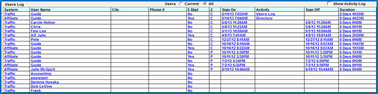
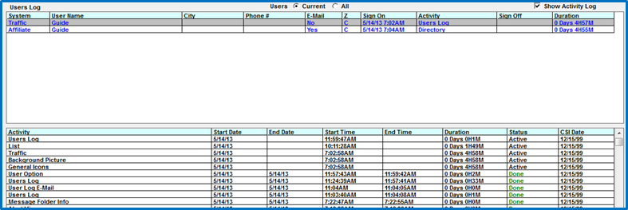

User Status Screen
The User Status Screen allows you to:
- See who is on the Traffic and Affiliate system(s)
- When a user was last on the system
- View how long they were on the System(s)
- Limit user access when system maintenance or updates are needed
Accessing the User Status Screen
To access the User Status Screen, click on Accessories->User Status.

You can choose to view only those users currently in the system, or all users by selecting “current” (all currently active users) or “all” (all users).
You can sort the information by clicking on any header in blue.
- System- The System(s) the User is currently using
- User Name- Pulled from the users’ profiles defined in the User Screen
- When you mouse over the User name, you will see the PC Name and Network card ID
- City- Pulled from the users’ profiles defined in the User Screen
- Phone Number- Pulled from the users’ profiles defined in the User Screen
- E-Mail- Pulled from the users’ profiles defined in the User Screen
- When you mouse over the email, you will see the email address defined for the user
- Z- is the user’s time zone
- Sign On- If viewing All users and the Sign On time is blank, the user has not yet signed on
- Activity- Indicates the Screen the User is in currently
- Sign Off- If blank, the user is still active in the system
- Duration- length of time signed onto the system
- Users that have never signed on after a new software release has been installed cannot be selected
You can see the total number of Active Users, along with the total number of Users if you selected “All” in the bottom right corner of the screen.
Activity Log
If you have rights to do so, you can click Show Activity Log in the upper right corner to view detailed information about a user.

User Status Buttons
- Cancel: Exit the User Status screen.
- Message: Send a message to users selected on above list. For a complete description see User Communications.
- Sign Off Alert: Sends a sign off message to users you have selected from the list. The button is enabled for users allowed to shut down the system. See System Shutdown for more information.
- Sign On OK Message: Used to inform users they can sign back into the system. Only users selected in the above list will be notified. This button is enabled only for the user that issued the Sign Off message
- Refresh: Retrieve the current status of users